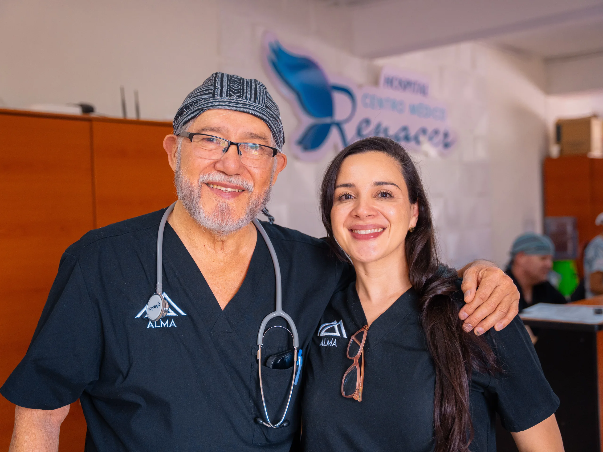
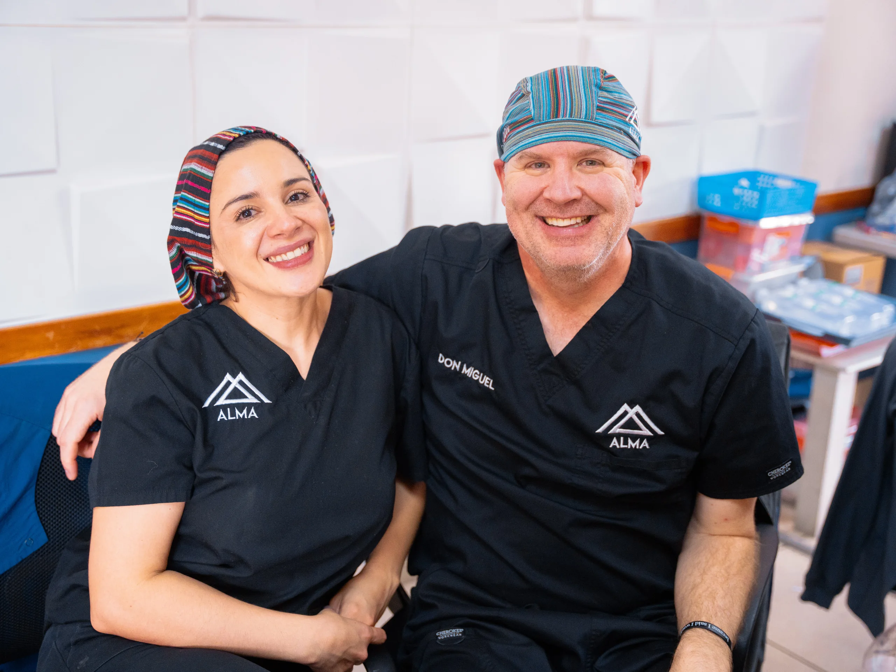

Quién dirige ALMA
Junta directiva
La junta directiva voluntaria de ALMA guía la misión, las finanzas y las alianzas de la organización.
Esta lista proviene del Volunteer Hub de ALMA. Los miembros de la junta pueden actualizar sus datos allí en Mi perfil → Junta Directiva. Abrir el Volunteer Hub
Responsables y transparentes
Una 501(c)(3) dirigida por voluntarios
ALMA no tiene personal pagado en EE. UU. Nuestra junta sirve sin remuneración, así que las donaciones van a la atención en Guatemala. EIN 83-2378971.
